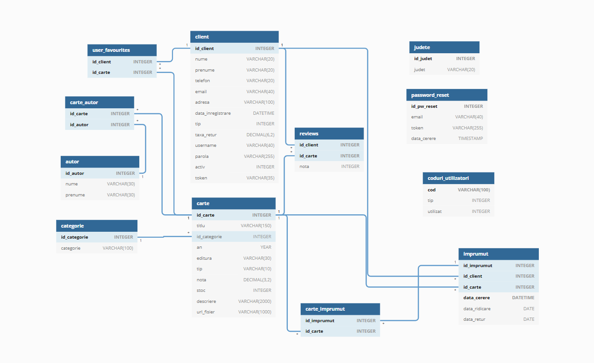

Aplicatia are ca scop principal facilitarea procesului de imprumut de carti in cadrul unei biblioteci. Aplicatia planuieste sa se ocupe atat de partea de interactiune cu clientii, cat si de partea de evidenta a cartilor si de administrare a bazei de date.
Aplicatia isi propune sa aiba un sistem de logare/autentificare, intrucat aproape nicio functie nu poate fi realizata in mod anonim. De asemenea, este necesara existenta mai multor tipuri de utilizatori, mai exact utilizatori de tip client, de tip administrator (pentru baza de date) si de tip bibliotecar. Motivatia existentei mai multor tipuri de utilizatori este dorinta de a usura cat mai mult munca staff-ului, prin a imparti sarcinile diferite la administratorii de baze de date si la bibliotecar.
In cazul in care utilizatorul nu este autentificat, el poate alege intre doua variante: autentificare sau inregistrare. In cazul autentificarii, ii va aparea un formular in care i se va cere e-mailul si parola. In cazul inregistrarii, va avea un formular de inscriere, care va contine cateva date personale. Vor fi cerute informatii despre tipul de utilizator dorit, iar, pentru fiecare caz, vor fi cerute diferite informatii (formularul va fi dinamic). In cazul administratorului sau a bibliotecarului, vor fi cerute informatii care sa verifice adevarul functiei cerute.
Facilitatile fiecarui tip de utilizator, respectiv limitarea utilizatorului neautentificat:
Asa cum este normal, aplicatia va fi bazata pe o baza de date, care contine informatii despre carti (titlu, autor, editura, anul editiei, url fotografie de coperta, descriere, numarul de exemplare disponibile pentru imprumut etc), despre clientii bibliotecii (identificati unic printr-un id) si altele. O diagrama UML care sa prezinte structura bazei de date este prezenta mai jos:
Aceasta baza de date modeleaza relatiile dintre clienti si functiile bibliotecii, mai exact imprumutul, acordarea de nota si adaugarea la favorite a unor carti. Baza de date contine, astfel, toate cartile puse la dispozitie de biblioteca si informatii despre acestea, precum si informatii despre imprumuturile realizate de clienti, in functie de care se calculeaza taxele de intarziere de retur, necesitatea notificarii clientului de a returna o carte imprumutata. De asemenea, in baza de date sunt retinute si review-urile utilizatorilor, pentru a putea calcula media generala a unei carti si pentru a putea afisa, in cadrul aplicatiei, lista de review-uri publica tuturor utilizatorilor.
O alta functie a aplicatiei va fi selectarea unor carti din baza de date in functie de niste filtre aplicate de client (de exemplu, afisarea cartilor scrise de un anumit autor, publicate de o anumita editura, cu o anumita categorie etc.) sau ordonarea lor in functie de diverse filtre (de exemplu, in functie de disponibilitate, in functie de numarul de imprumuturi, de review-uri etc.).